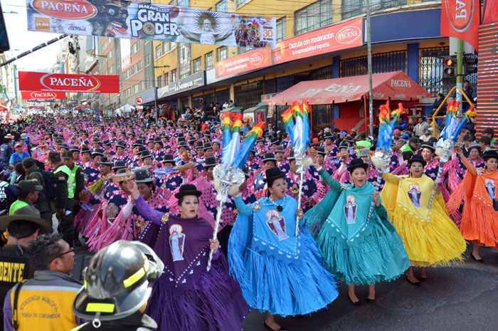

CULTURA ETNICA
Existen 36 pueblos reconocidos, :
Siendo el Quechua y el Aymara,
los mayoritarios en los Andes occidentales
El Chiquitano, el Guaraní y el Moxeño son los forman parte los
34 pueblos indígenas que viven en las Tierras Bajas
|
|
|

|
PRINCIPALES FESTIVIDADES
24 Enero: Feria de Alasitas / La Paz
2 Febrero: Virgen de la Candelaria Copacabana / La Paz
Febrero / Marzo: Magestuoso Carnaval de Oruro / Oruro
Febrero / Marzo: Carnaval Cruceño / Santa Cruz
Febrero / Marzo: Carnaval de la Concordia / Cochabamba
Marzo: Pujllay Tarabuco / Sucre
Mayo / Junio: Entrada de Gran Poder / La Paz
Julio: Santo Patrono de Moxos San Ignacio de Moxos / Beni
Agosto: Entrada de Urkupiña Quillacollo / Cochabamba
Agosto: Fiesta de Chutillos / Potosí
Agosto:Año Nuevo Aymara
Septiembre: Entrada de la Virgen de Guadalupe / Sucre.
Noviembre:Todos Santos
|
Danzas
Caporal
Los Chutas
Cueca Paceña
Kullaguada
Llamerada
Saya Afroboliviana
Zampoñada
Suri Sicuri
Morenada
Waka Waka
|
|